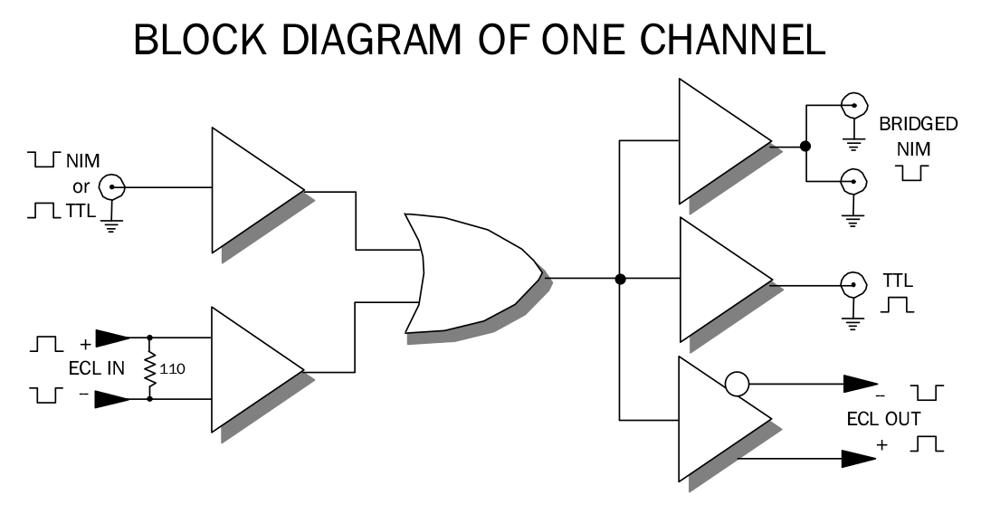

726 LEVEL TRANSLATOR

In addition, a logical "OR" is possible for the ECL input and the NIM/TTL input. The input to output is direct coupled with the output duration equal to the input duration. Each channel has a single input connector which accepts a fast negative NIM level with 50 ohm input impedance and a positive TTL level with 1000 ohms impedance. This produces a positive TTL output capable of driving a 50 ohm load and a bridged NIM output that drives two 50 ohm loads.
FEATURES
- Converts TTL, NIM and ECL Logic Families
- High Density - 16 Independent Channels
- DC - 150 MHz for NIM and ECL Translation
- DC - 100 MHz for TTL Translation
- Low Power - Meets Requirements for Single NIM Slot
- Minimum Pulse Widths: 4nSec for NIM and ECL translation; 7nSec for TTL translation.
- Insertion Delay: NIM, TTL or ECL input to NIM or ECL output = 5nSec. NIM, TTL or ECL input to TTL output = 10nSec.
INPUT CHARACTERISTICS
NIM/TTL
- 16 inputs, one per channel, LEMO style connector;
- accepts both negative NIM or positive TTL pulses or levels.
- NIM: 50 ohms impedance ±10%; -500mV threshold; input protected to ±8 VDC.
- TTL: 1000 ohms impedance ±10%; +1.2Volt threshold; input protected to ±8 VDC.
ECL Input
- 16 inputs, one per channel;
- 2 x 17 pin header with lock and eject feature;
- accepts complementary ECL inputs;
- removable 110 ohm input termination;
- 200mV differential threshold.
OUTPUT CHARACTERISTICS
NIM Outputs
- Two NIM outputs per channel; bridged -32mA current switching, LEMO style connectors; delivers one double amplitude NIM level or two normal NIM levels into 50 ohms; 1.5 nSec rise and fall times.
TTL Output
- One TTL output per channel, LEMO style connector; sources 45 mA to drive 50 ohm load or 1000 standard TTL loads, sink current of 100 mA;
- able to drive 100 standard TTL loads.
- 3.5 nSec rise and fall times.
ECL Output
- Complementary ECL, one per channel;
- 2 x 17 pin header with lock and eject feature;
- drives two 110 ohm ECL loads or up to 30 daisy-chained loads.
- Normal ECL levels of -800mV and -1.7 Volts, 2 nSec rise and fall times.